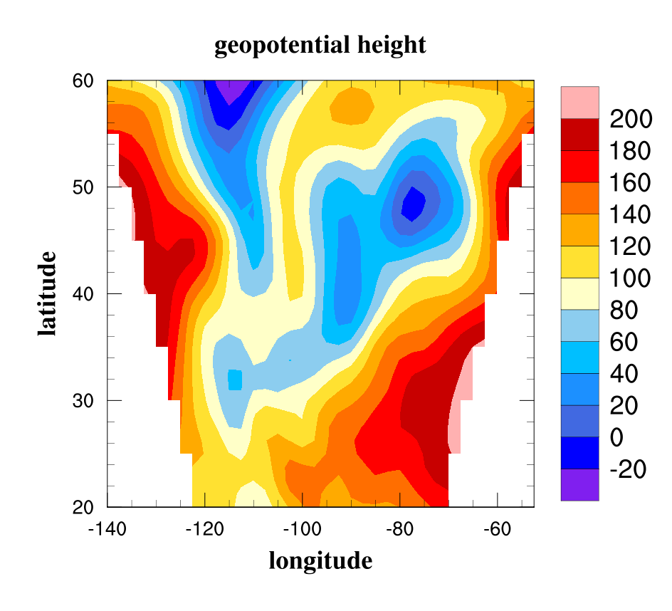
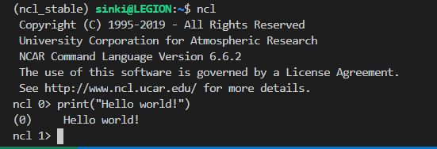

NCAR command language (NCL)
# 关于
NCAR 命令语言（NCL）是美国国家大气研究中心（NCAR）计算与信息系统实验室的产品，是一种专门为科学数据处理和可视化设计的解释语言。学习使用 NCL 主要是为了处理 NetCDF 格式。
# 参考网站
- 官网
- 安装指导
- 用户指导手册
- 手册的数据文件
- pyngl
- ncl2py Guide
# 安装
NCL 适用于 MacOS，Linux 和运行 Windows 10 Linux 子系统的 Windows 系统。换新笔记本后我安装了 WSL，所以这里在 WSL 中安装。
首先要安装 conda，这里按提示安装了 miniconda。（难怪我在超算的 .bashrc 里只看到了 miniconda，没找到 NCL，但找到了 NCO……
然后按照建议在 conda 环境下安装 NCL，新环境为 ncl_stable。
conda create -n ncl_stable -c conda-forge ncl
每次进入该环境，执行
source activate ncl_stable
要显示图形化界面，首先启动 Xming 开启 X11 转接…… 然后执行下面的命令检测
ncl -V
ncl $NCARG_ROOT/lib/ncarg/nclex/gsun/gsun02n.ncl
ncl $NCARG_ROOT/lib/ncarg/nclex/nug/NUG_multi_timeseries.ncl
就可以看到很漂亮的图啦！
于是又登上超算找 conda ，结果不能直接用。在 .conda 文件夹里有个 environment.txt 里明明看到了有 anaconda 和 ncl_stable 环境。翻 bashrc 发现有句
alias wanwb='source /home/export/online3/cesm06/wanwb/.bashrc'
果断执行 wanwb ，可以用 conda 了！可以用 ncl！

回到 WSL，执行 ng4ex gsun01n 提示 /bin/csh: bad interpreter: No such file or directory 查一下需要安装 C-shell。再次执行，可以看到一些折线图，且工作路径下多了一个 gsun01n.ncl 文件。
# 配置环境
由于使用了 ncl_stable 环境，就不用再设置变量 NCARG_ROOT 和路径 $NCARG_ROOT/bin 了。
在家目录下放置 .hluresfile 文件来个性化设置 NCL 图形环境。
关于代码编辑的高亮，我用了 vscode 连接 WSL，打开 ncl 文件后安装 NCL 扩展即可。不得不说这真的好用。
# 准备学习
把手册下载下来进行学习！有些大的数据文件在官网上，参考中已经列出来了。
加载公用函数库： load "$NCARG_ROOT/lib/ncarg/nclscripts/csm/contributed.ncl"
运行样例： ng4ex file.ncl
样例数据： $NCARG_ROOT/lib/ncarg/data/nug/
# 几天后
把手册大致过了一遍，对某些语法感到不适外，在手册最后看到了一章 PyNGL 和 PyNIO 的。于是很疑惑地到官网再一看……
好家伙，NCAR 已经不更新 NCL 了，官方都转 python 了
那我还学个 **
（一开始我还以为 NCL 官网的 Python 是关于 conda 安装的
又登集群确认了一遍，conda 里同时有 ncl_stable 和 pyn_env 两个环境…… 后者就是 PyNGL 和 PyNIO ……
啊…… 应该早点问师姐要代码看看是啥样的，如果都是 python 那我……
（3.22：问了师姐，他们那篇论文用的代码基本是 matlab…… 而我没能找到机器上有没有 matlab……）
（续：matlab 在另一个账号下…… 代码放机器上被清了…… ）
# PyNGL & PyNIO
conda create --name pyn_env --channel conda-forge pynio pyngl
source activate pyn_env
报错了，可能版本不兼容。删除环境重建
conda env remove --name pyn_env
conda create --name pyn_env --channel conda-forge/label/cf201901 xarray netcdf4 scipy pyngl pynio
source activate pyn_env
最后清理下安装的包
conda clean -a
conda clean -p
conda clean -t
创建日期：2021 年 3 月 18 日
更新日期：2021 年 3 月 30 日